***
←
→
Machine learning
A gentle introduction
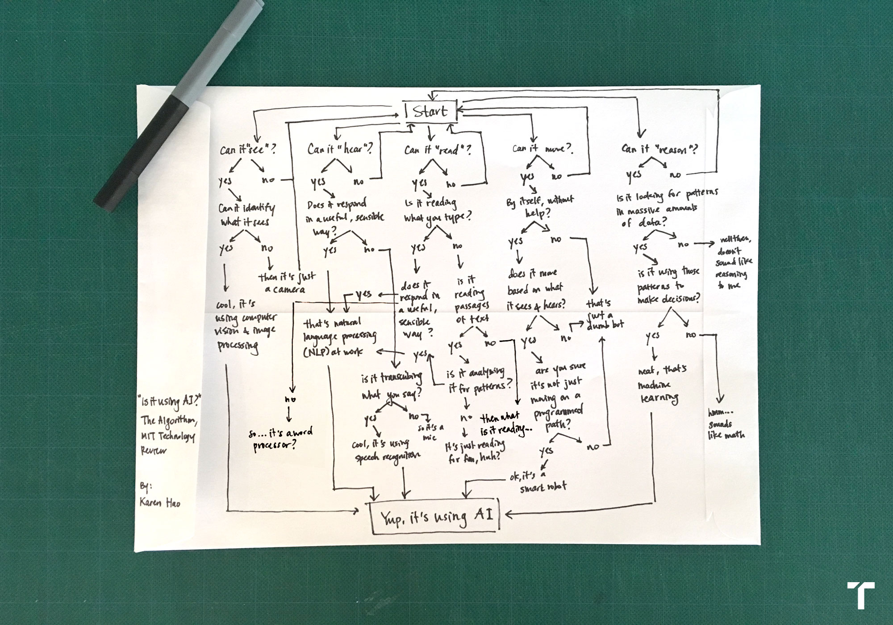
ML: BFD!!
|
Our 'menu' for today
We humans (not other animals!) have been to outer space, invented agriculture, found cures for diseases, invented countless things, create and use STEM, have radically altered the environment... But, these pale in comparison, when it comes to the promise/potential/dream of machine intelligence.
Our specific topic today - a DATA-DRIVEN approach to AI.
We will necessarily leave out the underlying math - courses related to ML (CS566, CS567...) will provide you that [almost all the math falls into these three categories: statistics, probability - for data sampling, experiment design, simulation, model building; linear algebra - for data description and analysis (eg. in NNs), geometric operations on data; calculus - for function optimization (eg error reduction, reward maximization)]
Here is 'a' history of AI, to help set the stage. What's not shown, is the 'Cyc' project ('84-'94), which I worked on (for just a year).
A couple of clips...
Knosis.ai: https://www.youtube.com/watch?v=3RJ_YPh-1t8 - glimpses of how ML is FUELED by data!!
A fascinating documentary on (data-driven) ML: https://www.pbs.org/wgbh/frontline/film/in-the-age-of-ai - ~2 hours, every second of which is worth watching (because this is how our future is being shaped). Set aside 2 hours, watch it; or, as my friend Lurong would exclaim, "just-tu do it!!" :) For now, we simply want a TL;DR - so, let's watch just till 1:15.
Types of AI, Machine Learning ("ML"), types of ML
Here is a good way [after Arend Hintze] to classify AI types (not just techniques!)..
Type I: Reactive machines - make optimal moves - no memory, no past 'experience'. Ex: game trees.
Type II: Limited memory - human-compiled/provided , one-shot 'past' 'experiences' are stored for lookup. Ex: expert systems, neural networks.
Type III: Theory of Mind - "the understanding that people, creatures and objects in the world can have thoughts and emotions that affect the AI programs' own behavior".
Type IV: Self-awareness - machines that have consciousness, that can form representations about themselves (and others).
Type I AI is simply, application of rules/logic (eg. chess-playing machines).
Type II AI is where we are, today - specifically, this is what we call 'machine learning' - it is "data-driven AI"! Within the last decade or so, spectacular progress has been made in this area, ending what was called the 'AI Winter'.
As of now, types III and IV are in the realm of speculation and science-fiction, but in the general public's mind, they appear to be certainty in the near term :)
Practically speaking, there are exactly three types of AI that have been pursued, in the quest for human-level AI:
- inference-based: 'symbolic'
- goals/rewards-based: 'reinforcement'
- connection-based: 'neuro'
ML is the ONE subset of AI that is revolutionizing the world.
"Machine learning focuses on the construction and study of systems that can learn from data to optimize a performance function, such as optimizing the expected reward or minimizing loss functions. The goal is to develop deep insights from data assets faster, extract knowledge from data with greater precision, improve the bottom line and reduce risk."
- Wayne Thompson, SAS
ML comes in several flavors - the key types of machine learning include:
- Supervised learning
- Unsupervised learning
- Semisupervised learning
- Reinforcement learning
Here is a classification:
Supervised learning algorithms are "trained" using examples (DATA!] where in addition to features [inputs], the desired output [label, aka target] is known. The goal is to LEARN the patterns inherent in the training dataset, and use the knowledge to PREDICT the labels for new data.
Unsupervised learning is a type of machine learning where the system operates on unlabeled examples. In this case, the system is not told the "right answer." The algorithm tries to find a hidden structure or manifold in unlabeled data. The goal of unsupervised learning is to explore the data to find intrinsic structures within it using methods like clustering or dimension reduction.
For Euclidian space data: k-means clustering, Gaussian mixtures and principal component analysis (PCA)
For non-Euclidian space data: ISOMAP, local linear embedding (LLE), Laplacian eigenmaps, kernel PCA.
Use matrix factorization, topic models/graphs for social media data.
Here is a WIRED mag writeup on unsupervised learning:
Let's say, for example, that you're a researcher who wants to learn more about human personality types. You're awarded an extremely generous grant that allows you to give 200,000 people a 500-question personality test, with answers that vary on a scale from one to 10. Eventually you find yourself with 200,000 data points in 500 virtual "dimensions" - one dimension for each of the original questions on the personality quiz. These points, taken together, form a lower-dimensional "surface" in the 500-dimensional space in the same way that a simple plot of elevation across a mountain range creates a two-dimensional surface in three-dimensional space.
What you would like to do, as a researcher, is identify this lower-dimensional surface, thereby reducing the personality portraits of the 200,000 subjects to their essential properties - a task that is similar to finding that two variables suffice to identify any point in the mountain-range surface. Perhaps the personality-test surface can also be described with a simple function, a connection between a number of variables that is significantly smaller than 500. This function is likely to reflect a hidden structure in the data.
In the last 15 years or so, researchers have created a number of tools to probe the geometry of these hidden structures. For example, you might build a model of the surface by first zooming in at many different points. At each point, you would place a drop of virtual ink on the surface and watch how it spread out. Depending on how the surface is curved at each point, the ink would diffuse in some directions but not in others. If you were to connect all the drops of ink, you would get a pretty good picture of what the surface looks like as a whole. And with this information in hand, you would no longer have just a collection of data points. Now you would start to see the connections on the surface, the interesting loops, folds and kinks. This would give you a map.
Here is a practical use for unsupervised learning.
Semisupervised learning is used for the same applications as supervised learning. But this technique uses both labeled and unlabeled data for training - typically, a small amount of labeled data with a large amount of unlabeled data. The primary goal is unsupervised learning (clustering, for example), and labels are viewed as side information (cluster indicators in the case of clustering) to help the algorithm find the right intrinsic data structure.
With reinforcement learning 'RL'), the algorithm discovers for itself which actions yield the greatest rewards through trial and error. Reinforcement learning has three primary components:
1. agent - the learner or decision maker
2. environment - everything the agent interacts with
3. actions - what the agent can do
The objective is for the agent to choose actions that maximize the expected reward over a given period of time. The agent will reach the goal much quicker by following a good policy, so the goal in reinforcement learning is to learn the best policy. Reinforcement learning is often used for robotics and navigation.
Markov decision processes (MDPs) are popular models used in reinforcement learning. MDPs assume the state of the environment is perfectly observed by the agent. When this is not the case, we can use a more general model called partially observable MDPs (or POMDPs).
And there's also, hierarchical RL: https://sites.google.com/view/hrl-ep3
'Neuro' [origins of modern ML]
Our brains contain about 100 billion of them - each neuron is like a function, with inputs ("dendrites"), and an output ("axon"):
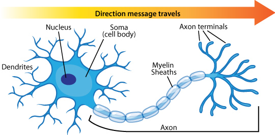
Neurons ENCODE memory, learning... There are many types of neurons:
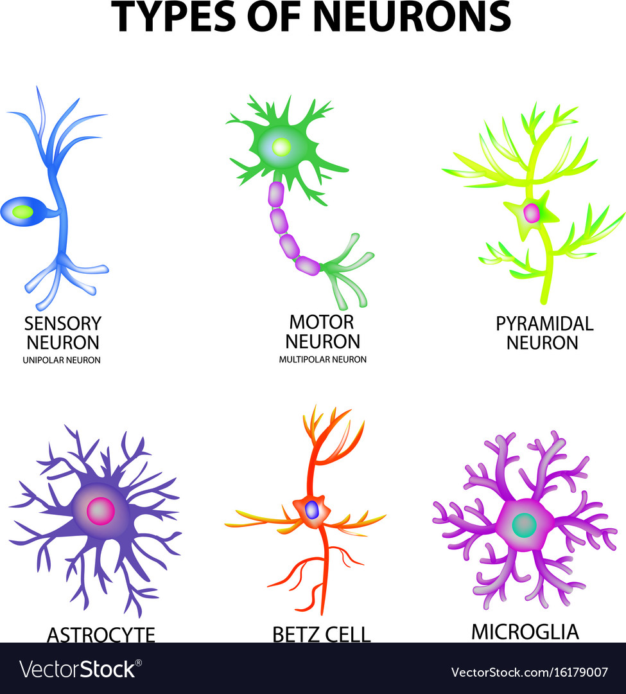
A neurons CONNECTS, via dendrites (inputs) and axon (output), to other neurons:
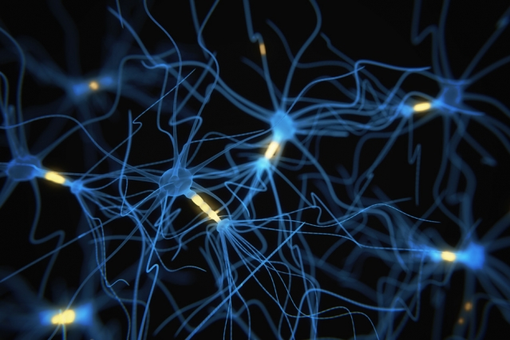
A neural network is a form of 'AI' - uses neuron-like connected units to learn patterns in training (existing) data that has known outcomes, and uses the learning to be able to gracefully respond to new (non-training, 'live') data.
Definition: a neural net(work) is an interconnected set of weighted, nonlinear functions [this compact definition will become clear[(er), soon]:
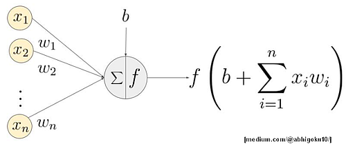
The overall idea is this:
- existing data is used to TRAIN a neural network - the network 'learns' patterns in the data, by adapting weights in each interconnected unit ('neuron')
- the network can now go 'live', ie. be deployed
- new data can be processed on the DEPLOYED network, which would make predictions about it based on the patterns learned
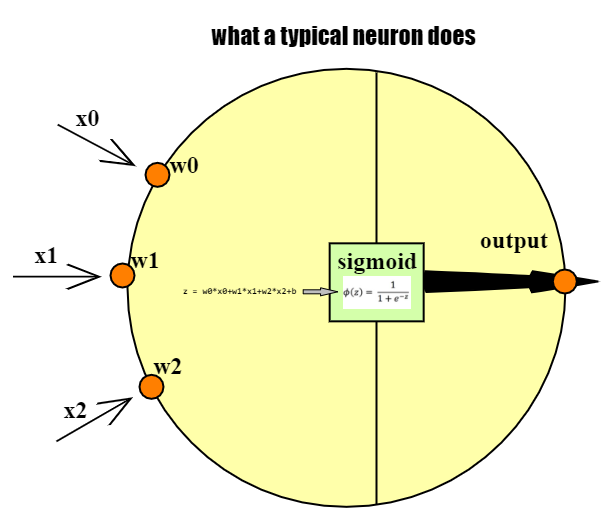
Guess why you are able to recognize these?
Neural networks (NNs) can be used to:
- recognize/classify features - traffic, terrorists, expressions, plants, words..
- detect anomalies - unusual CC activity, unusual machine states, gene sequences, brain waves..
- predict exchange rates, 'likes'..
- calculate numerical values (eg. home prices)
- ... [HUNDREDS, if not THOUSANDS, of uses - ANY form of data, that has ANY pattern in it, can be learned!!]
Here is some early NN work.
As you can imagine, 'Big Data' can help in all of the above! The bigger the training set, the better the learning, and therefore, better the result.
Below is an overview of how NNs work..
The brain (specifically, learning/training) is modeled after strengthening relevant neuron connections - neurons communicate (through axons and dendrites) dataflow-style (neurons send output signals to other neurons):
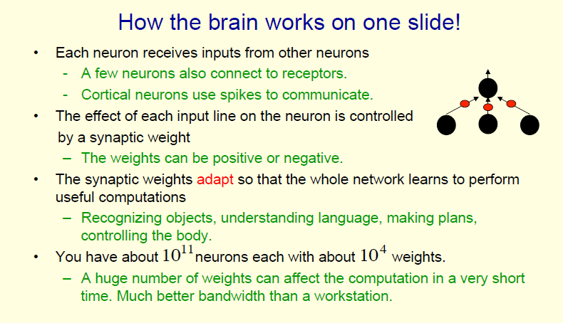
Linear (identity), 'leaky' output: input values get passed through 'verbatim' (not very useful to us, does not happen in real brains!):
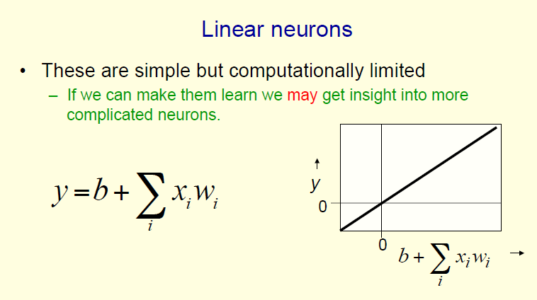
A better model is when a neuron outputs a 1 (stays 0 to start with) ("fires") if and when its combined inputs exceed a threshold value:
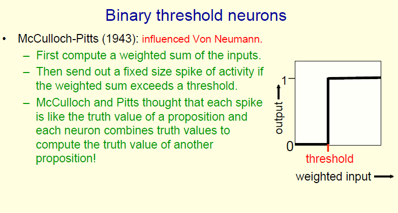
Another option is to convert the 'step' pulse to a ramp:
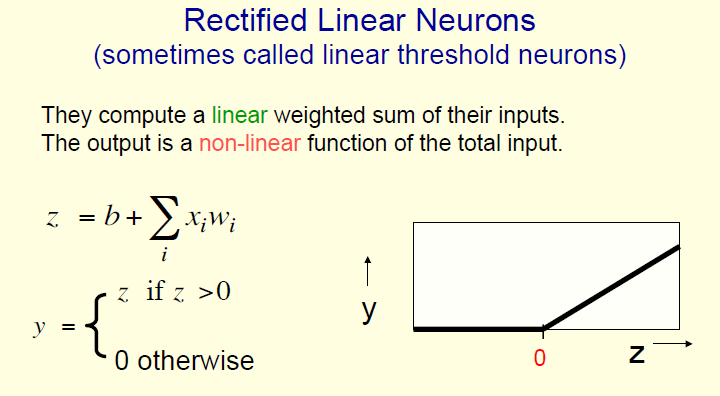
Even better - use a smoother buildup of output:
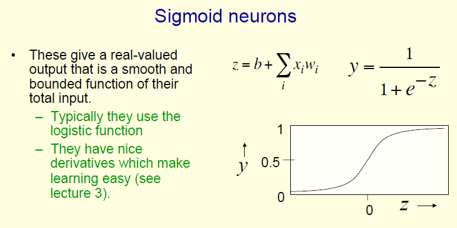
*Even* better - use a sigmoidal probability distribution for the output:
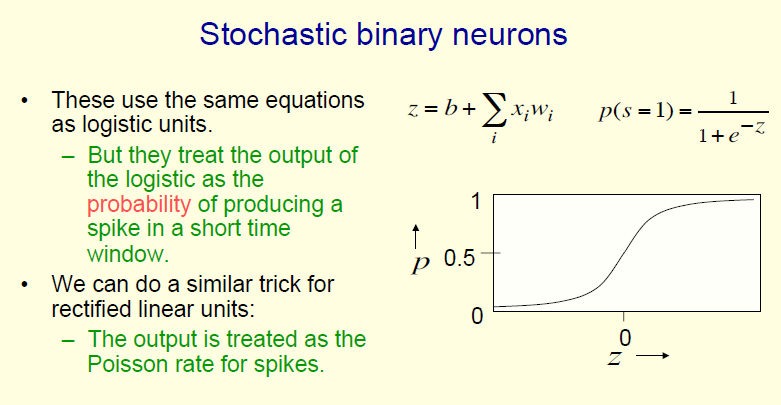
The functions we use to generate the output, are called activation functions - the ones we looked at are identity, binary threshold, rectifier and sigmoid. The gradients of these functions are used during backprop. There are more (look these up later) - symmetrical sigmoid, ie. hyperbolic tangent (tanh), soft rectifier, polynomial kernels...
This is from an early ('87) newsletter - today's NNs are not viewed as systems of coupled ODEs - instead we use 'training' to make processing element 'learn' how to respond to its inputs:
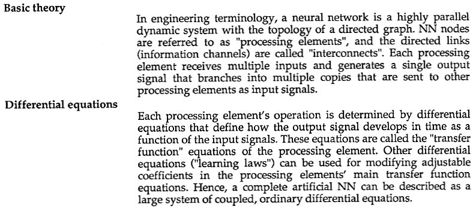
With the above info, we can start to build our neural networks!
* we create LAYER upon LAYER of neurons - each layer is a set (eg. column) of neurons, which feed their (stochastic) outputs downstream, to neurons in the next (eg. column to the right) layer, and so on
* each layer is responsible for 'learning' some aspect of our target - usually the layers operate in a hierarchical (eg. raw pixels to curves to regions to shapes to FEATURES) fashion
* a layer 'learns' like so: its input weights are adjusted (modified iteratively) so that the weights make the neurons fire when they are given only 'good' inputs.
Here is how to visualize the layers.
The above steps can be summarized this way:
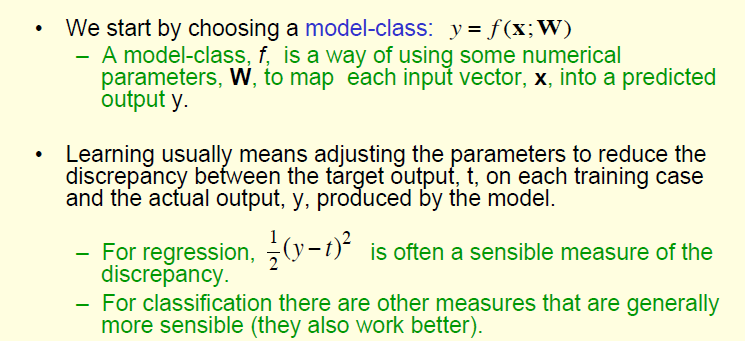
Learning (ie. iterative weights modification/adjustment) works via 'backpropagation', with iterative weight adjustments starting from the last hidden layer (closest to the output layer) to the first hidden layer (closest to the input layer). Backpropagation aims to reduce the ERROR between the expected and the actual output [by finding the minimum of the [quadratic] loss function], for a given training input. Two hyper/meta parameters guide convergence: learning rate [scale factor for the error], momentum [scale factor for error from the previous step]. To know more (mathematical details), look at this page, and this.
Here is backprop again, in equation and code form:
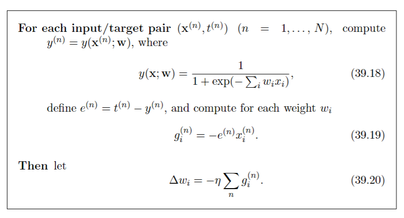
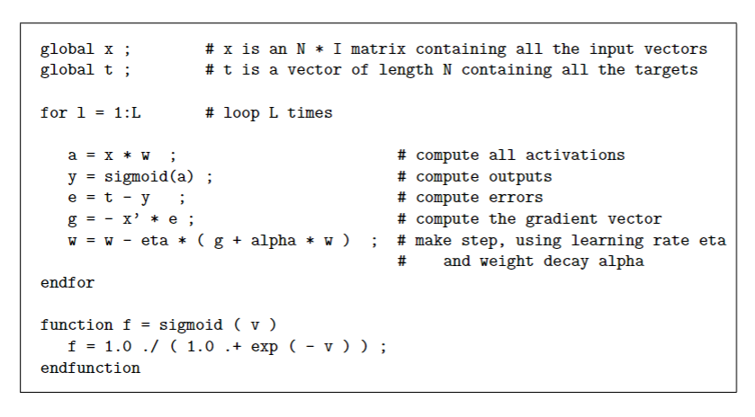
To quote MIT's Alex "Sandy" Pentland: "The good magic is that it has something called the credit assignment function. What that lets you do is take stupid neurons, these little linear functions, and figure out, in a big network, which ones are doing the work and encourage them more. It's a way of taking a random bunch of things that are all hooked together in a network and making them smart by giving them feedback about what works and what doesn't. It sounds pretty simple, but it's got some complicated math around it. That's the magic that makes AI work."
As per the above, here is a schematic showing how we could look for a face:
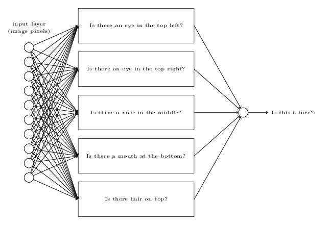
Note that a single neuron's learning/training (backprop-based calculation of weights and bias) can be considered to be equivalent to multi-linear regression - the neuron's inputs are features (x_0, x_1..), the learned weights are corresponding coefficients (w_0,w_1..) and the bias 'b' is the y intercept! We then take this result ('y') and non-linearize it for output, via an activation function. So overall, this is equivalent to applying logistic regression to the inputs. When we have multiple neurons in multiple layers (all hidden, except for inputs and outputs), we are chaining multiple sigmoids, which can approximate ANY continuous function! THIS is the true magic of ANNs. Such 'approximation by summation' occurs elsewhere as well - the Stone-Weierstrass theorem, Fourier/wavelet analysis, power series for trig functions...
A simpler example - a red or blue classifier can trained, by feeding it a large set of (x,y) values and corresponding blueness values - the learned weights in this case are the coefficients a and b, in the line equation ax+by=c [equivalently, m and c, in y=mx+c]:
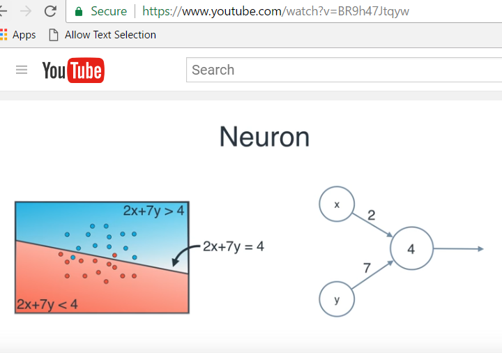
Here is a simple network to learn XOR(A,B) - here all the 6 weights (1,1,1,1,-1,1) are learned:
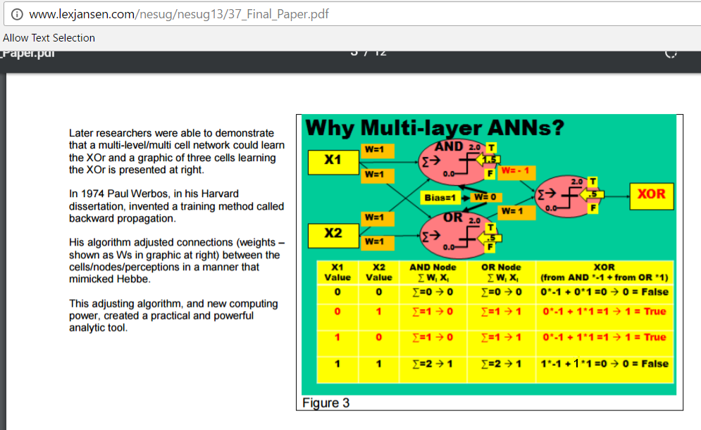
The following clip shows how a different NN (with one middle ('hidden') layer with 5 neurons) learns XOR - as the 5 neurons' weights (not pictured) are repeatedly modified, the 4 inputs ((0,0), (0,1), (1,0), (1,1)) progressively lead to the corresponding expected XOR values of 0,1,1,0 [in other words, the NN learns to predict XOR-like outputs when given binary inputs, just by being provided the inputs as well as expected outputs]:
RNN, LSTM, Transformers
An RNN is a history-dependent network where past predictions are used for future ones (by having outputs fed back):
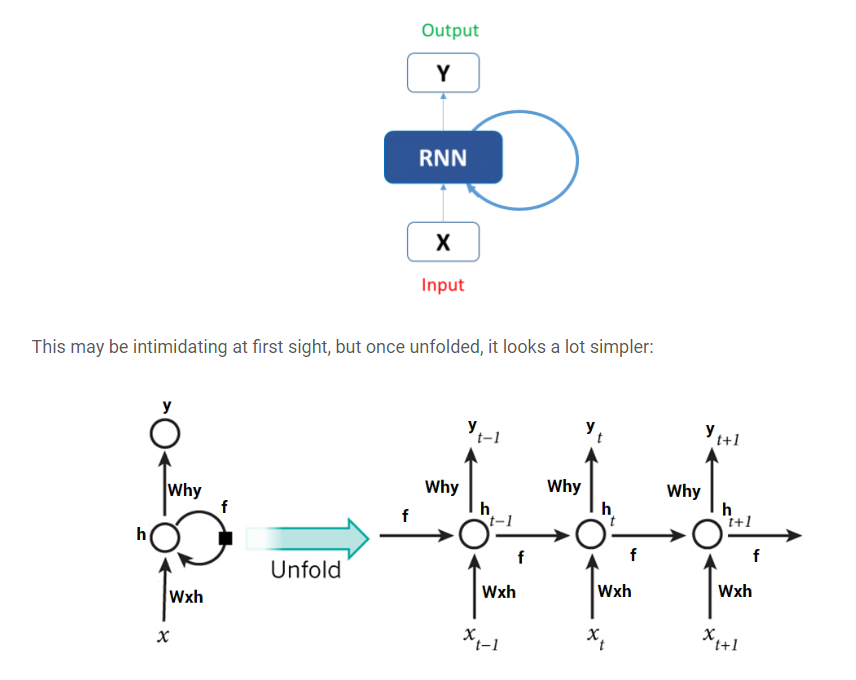
An LSTM is a special kind of RNN, for being able to process longer chains of dependencies.
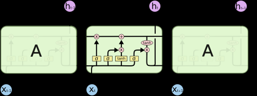
RNNs/LSTMs are especially good for 'sequence' problems such as speech recognition, language translation, etc.; they are not massively parallelizable the way CNNs can be.
Here is more on LSTMs.
Temporal Convolution Nets (TCNs) are a good, parallelizable alt to RNNs; Numenta's HTM - also a better alternative to RNNs.
NN architectures
Specific architectures (numbers and types of layers) exist, for different NN tasks - eg. look at this page: https://medium.com/@sidereal/cnns-architectures-lenet-alexnet-vgg-googlenet-resnet-and-more-666091488df5
Before embarking on a big task, it is important to first identify, or create, a suitable architecture - otherwise, learning efficiency, and/or performance accuracy, will suffer.
CNN [Convolutional Neural Network]
In signal processing, a convolution is a blending (or integrating) operation between two functions (or signals or numerical arrays) - one function is convolved (pointwise-multiplied) with another, and the results summed.
Here is an example of convolution - the 'Input' function [with discrete array-like values] is convolved with a 'Kernel' function [also with a discrete set of values] to produce a result; here this is done six times:
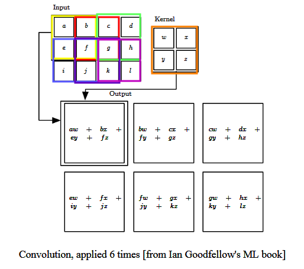
Convolution is used heavily in creating image-processing filters for blurring, sharpening, edge-detection, etc. The to-be-processed image represents the convolved function, and a 'sliding' "mask" (grid of weights), the convolving function (aka convolution kernel):
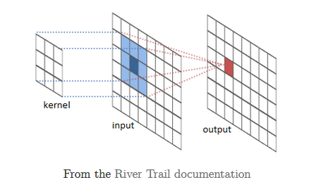
Here is [the result of] a blurring operation:
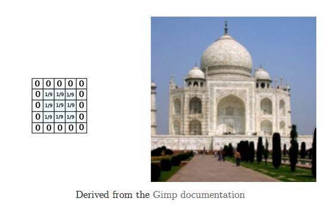
Here you can fill in your own weights for a kernel, and examine the resulting convolution.
So - how does this relate to neural nets? In other words, what are CNNs?
CNNs are biologically inspired - (convo) filters are used across a whole layer, to enable the entire layer as a whole to detect a feature. Detection regions are overlapped, like with cells in the eye.
Here is an*excellent* talk on CNNs/DNNs, by Facebook's LeCun.
Here is a *great* page, with plenty of posts on NNs - with lots of explanatory diagrams.
In essence, a CNN is where we represent a neuron's weights as a matrix (kernel), and slide it (IP-style) over an input (an image, a piece of speech, text, etc.) to produce a convolved output.
In what sense is a neuron's weights, a convolution kernel?
We know that for an individual neuron, its output `y` is expressed by
`y = x_0*w_0 + w_1*x_1 + .... + w_n*x_n + b`, where the `w_i`s represent the neuron's weights, and the `x_i`s, the incoming signals [`b` is the neuron's activation bias]. The multiplications and summations resemble a convolution! The incoming 'function' is `[x_0, x_1, x_2, .... x_n]`, and the neuron's kernel 'function', `[w_0, w_1, w_2, .... w_n]`.
Eg. if the kernel function is `[0,0,0...w_0,w_1,0,0...]` [where we only process our two nearest inputs], the equivalent network would look like so [fig from Chris Olah]:
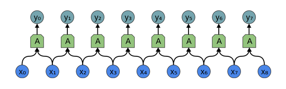
The above could be considered one 'layer' of neurons, in a multi-layered network. The convolution (each neuron's application of `w_0` and `w_1` to its inputs) would produce the following:
`y_0 = x_0*w_0 + x_1*w_1 + b_0`
`y_1 = x_1*w_0 + x_2*w_1 + b_1`
`y_2 = x_2*w_0 + x_3*w_1 + b_2`
....
Pretty cool, right? Treating the neuron as a kernel function provides a convenient way to represent its weights as an array. For 2D inputs such as images, speech and text, the kernels would be 2D arrays that are coded to detect specific features (such as a vertical edge, color..).
EACH NEURON IS CONVOLVED OVER THE ENTIRE INPUT (again, IP-style), AND AN OUTPUT IS GENERATED FROM ALL THE CONVOLUTIONS. The output gets 'normalized' (eg. clamped), and 'collapsed' (reduced in size, aka 'pooling'), and the process repeats down several layers of neurons: input -> convolve -> normalize -> reduce/pool -> convolve -> normalize -> reduce/pool -> ... -> output.
The following pics are from a talk by Brandon Rohrer (Microsoft). You DON'T need to know the details of the steps - just understand that PIXELs are input, classification is the output.
What we want:

The input can be RST (rotation, scale, translation) of the original:
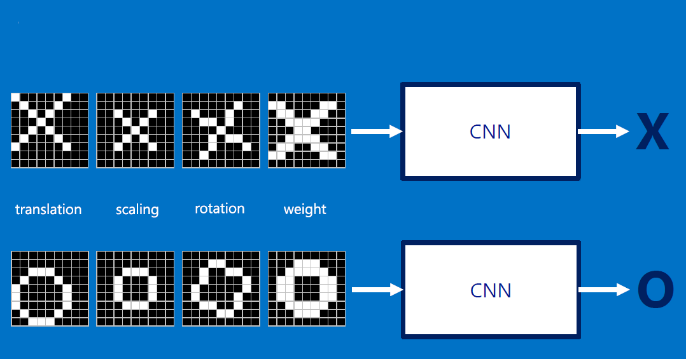
How can we compute similarity, but not LITERALLY (ie without pixel by pixel comparison)?
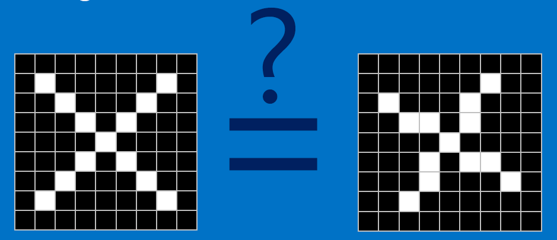
Useful pixels are 1, background pixels are -1:
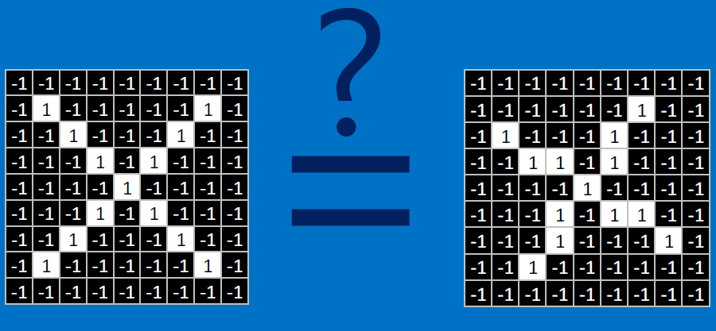
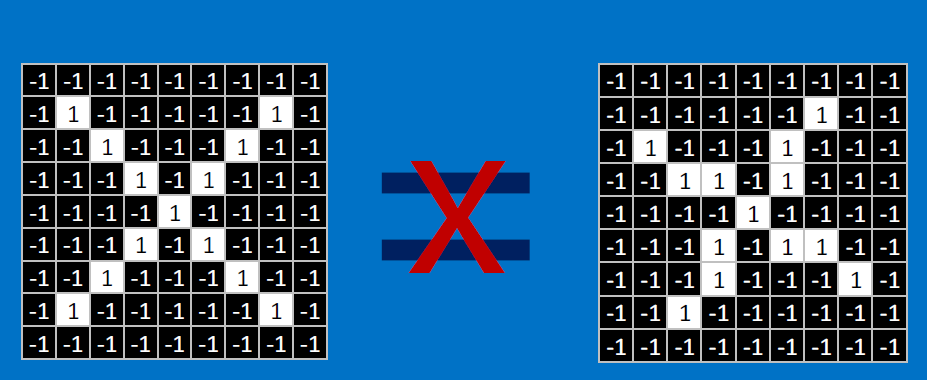
We match SUBREGIONS:
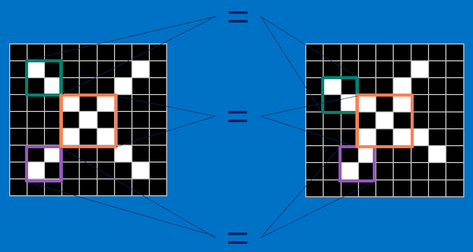
Convolutional neurons that check for these three features:
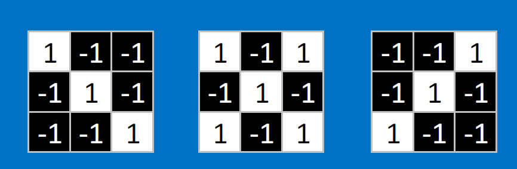
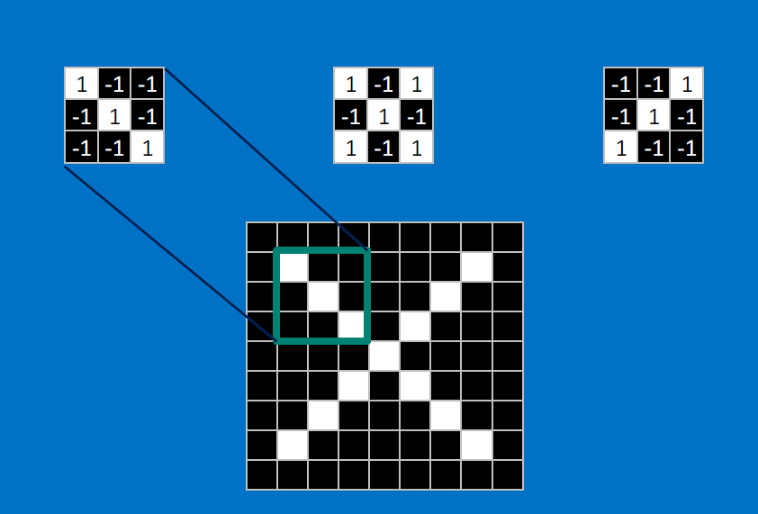
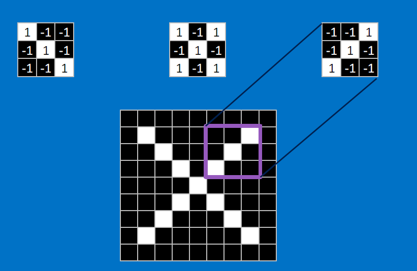
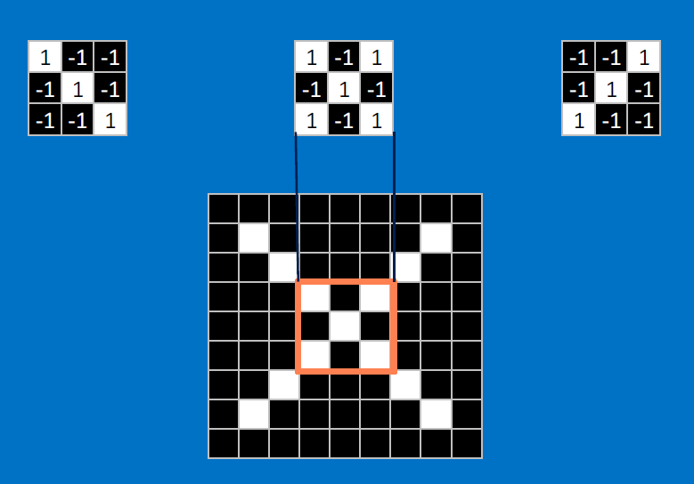
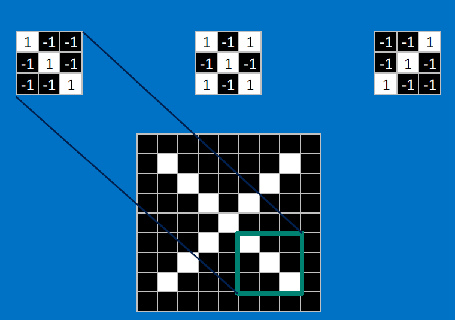
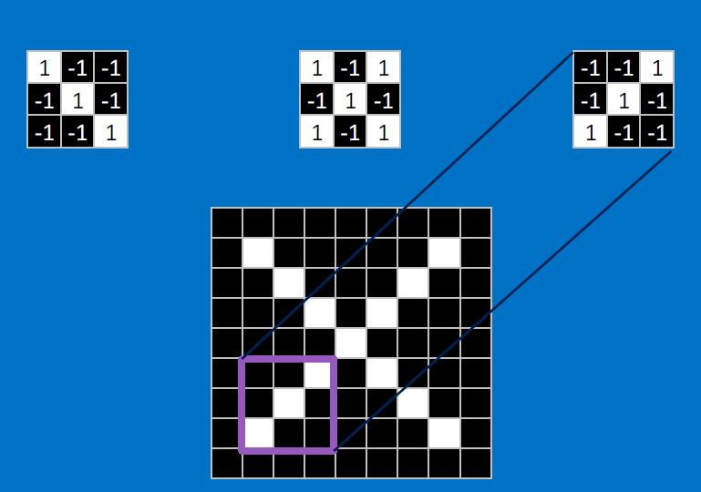
CONVOLVE, ie. do `x_i*w_i`, then average, output a value:
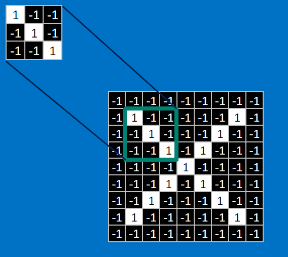
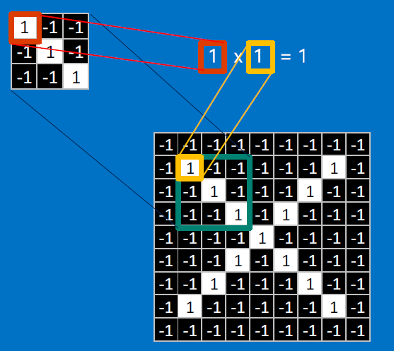
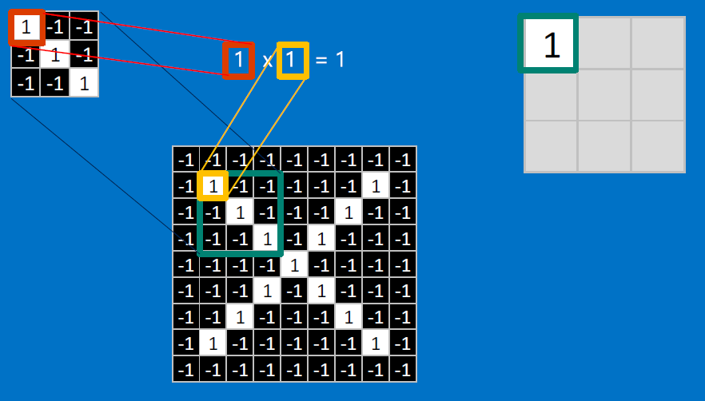
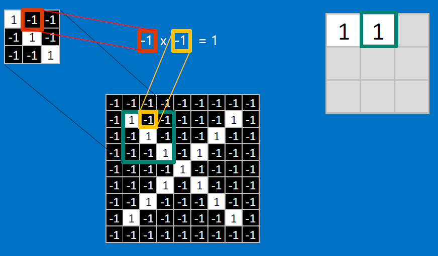
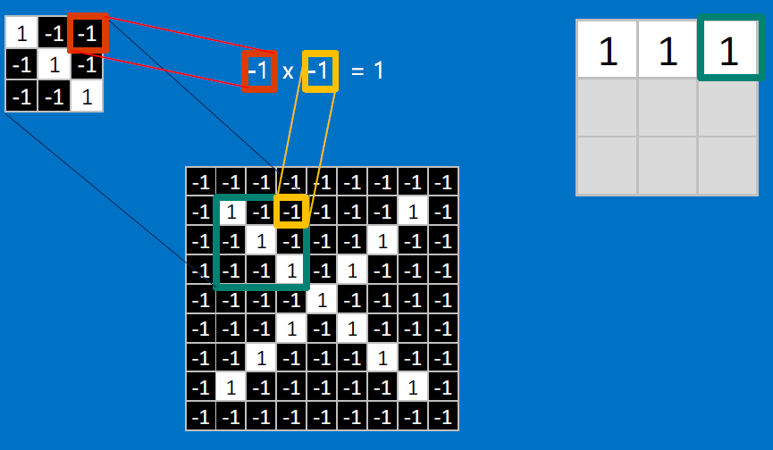
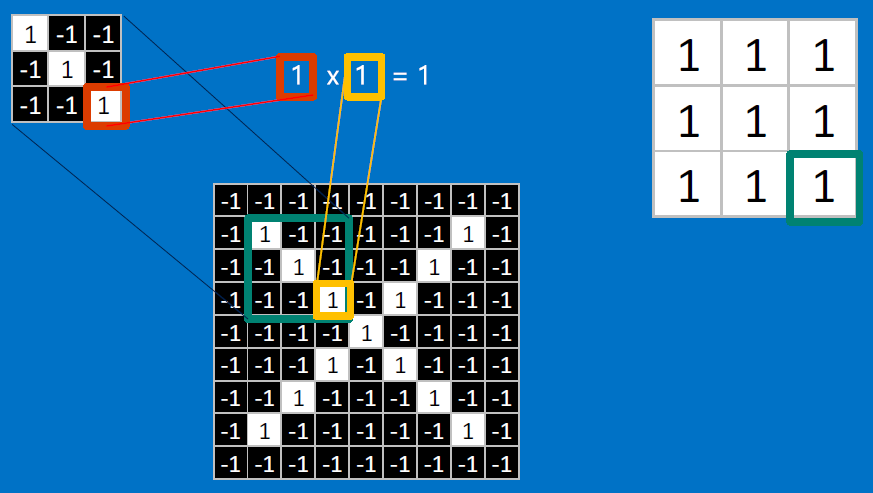
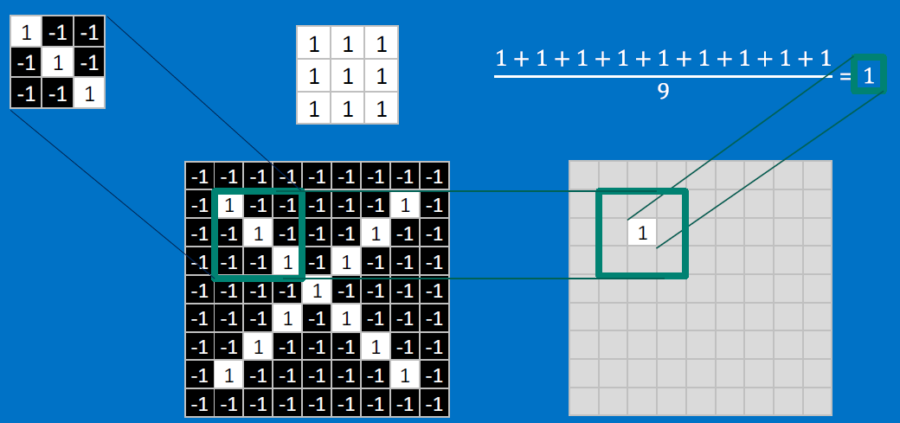
Need to center the kernel at EVERY pixel (except at the edges) and compute a value for that pixel!
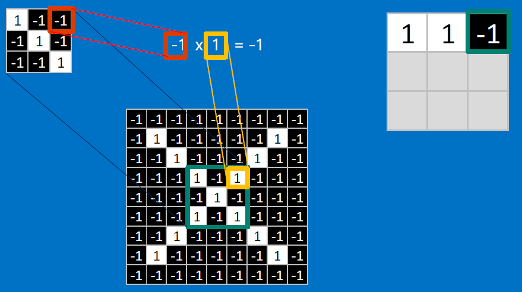
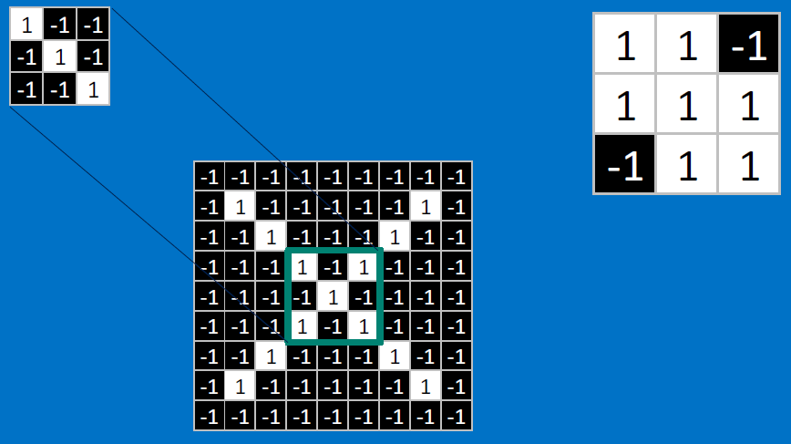
We end up with a 7x7 output grid, just for this (negative slope diagonal) feature:
Each neuron (feature detector) produces an output - so a single input image produces a STACK of output images [three in our case, one from each feature detector]:
To collapse the outputs, we do 'max pooling' - replace an mxn (eg. 2x2) neighborhood of pixels with a single value, the max of all the m*n pixels.
Next, create a ReLU - rectified linear unit - replace negative values with 0s:
After a single stage of convolution, ReLU, pooling (or eqvt'ly, convolution, pooling, ReLU):
Usually there are multiple stages:
The resulting output values (12 in our case) are equivalent to VOTES: values at #0, #3, #4, #9, #10 contribute to voting for an 'X'; by repeated training with X-like images, which produce high-valued outputs for exactly those values at #0,#3,#4,#9,#10, the RECEIVER of all the 12 values, ie . the 'X' detector, learns to adjust its weights so that those inputs at #0,#3,#4,#9,#10 matter more (get assigned higher weight multipliers) compared to the other inputs such as #1,#2..:
Likewise, if we fed O image detectors kernels' results (also an array of 12 values) to the O receiver, the O receiver would classify it as an O - because the O detector has been separately trained, using several O-like images and O-feature detector neurons!!
After training, a new ('test') image is fed to BOTH the X feature detector neurons AND to the O feature detector neurons, who outputs are all combined to produce a 12-element array as before. Now we feed that array to both the X-decider neuron and the O-decider neuron:
Here's the output for X and O - the results average to 0.91 for X, and 0.52 for O - the NN would therefore classify this as an X:
If we feed the network an O-like image instead, the X and O detectors will go to work, and produce an output array where the O features (at #1,#2..) would be higher. So when this array is fed to the X decider and the O decider, we expect the image to be classified as O, eg. because the output probabilities from the X decider and O decider come out to be 0.42 and 0.89.
Repeat for each class that needs to be learned: test input => class detectors => outputs => train classifier.
This is very roughly equivalent to creating a "regression line" that "best fits" available data.
In summary:
In real world situations, these voting outputs can also be cascaded:
'All together now':
In the above, if we had fed an O-like image instead, the output probability would be higher for O.
Errors are reduced via backpropagation. Error is computed by taking the absolute differences' sums between expected and observed outputs:
In RL, we'd use thousands of images for each class (outcome/label), and create a network that can detect dozens of classes - eg. here is a pictorial representation of an NN that can classify dogs:
For each feature, each weight (one at a time) is adjustly slightly (+ or -, using the given learning rate) from its current value, with the goal of reducing the error (use the modified weights to re-classify, recompute error, modify weights, reclassify.. iterate till convergence) - this is called backpropagation:
A Capsule Network (CapsNet) is a more robust (compared to regular CNNs) architecture for object detection; see also this page.
That was a whirlwind tour of the world of CNNs! Now you can start to understand how an NN can detect faces, cars..:
When is a CNN **not** a good choice? Answer: when data is not spatially laid out, ie. scrambling rows and columns of the data would still keep the data intact (like in a relational table) but would totally throw off the convolutional neurons!
Players (Top Six, plus others)
- Amazon uses deep learning for product recommendations, Alexa...
- Google: self-driving cars, TensorFlow, DeepMind
- Microsoft: ImageNet entry, CNTK, Skype Translator... Here are a bunch of their AI demos.
- Facebook: DeepFace can search 800M faces in <5 sec! Also, Facebook is planning to open source its hardware setup. Deep learning is also used in Instagram, for recognizing content in images, including text.
- IBM: Watson, AlchemyAPI, Watson Analytics
- Apple uses deep learning for Siri, iTunes, etc.
- Many others: Alibaba, Baidu, Tencent, Uber, Netflix, Visa, LinkedIn...
The top three players - Amazon, Google, Microsoft - all have cloud-based APIs. Others - eg. FloydHub, Paperspace... other cloud-based ML training and hosting.
The 2018 Turing Award was for ML.
AI (ML, really) is tranforming world economies - everyone wants to participate, and WIN:
Again - > watch the ~ 2 hour PBS that we brought up earlier.
Look up papers/blogs by:
- Andrew Ng
- Yann LeCun
- Andrej Karpathy
- Chris Olah
- Brandon Rohrer
Applications - a sampler
ML is a runaway engineering success, which is sure to lead to 1000s (!) of applications, covering every human activity! Remember - if ANYTHING has a 'PATTERN' (that a. sets it APART from others, and b. has VARIATIONS within itself), it can be LEARNED!
Below is an arbitrary ("random") sampling of applications [some we talked about or encountered earlier]. The point is that "AI", ie. ML, is now mature enough, widely deployable enough that we can start dreaming up NEW USES for it!
- https://www.youtube.com/channel/UCWN3xxRkmTPmbKwht9FuE5A - make the data 'lit'!
- SDCs, eg. https://www.youtube.com/watch?v=tiwVMrTLUWg
- Face detection, EU airports: https://www.cnn.com/travel/article/ai-lie-detector-eu-airports-scli-intl/index.html
- Face detection, Chinese classrooms(!): https://www.youtube.com/watch?v=3H1hj_C8F_A
- https://developer.amazon.com/blogs/alexa/post/ca34b954-1c5d-4a59-b326-f45c8df7c89c/alexa-skill-tech-for-good-challenge-winners
- https://ai.googleblog.com/2018/11/improved-grading-of-prostate-cancer.html
- ASL: https://www.youtube.com/watch?v=a4zvhJsBPa0
- 'master key' (uh oh): https://boingboing.net/2018/11/15/masterprints.html
- Google's Quick Draw, AutoDraw [here is an alternate implementation of QuickDraw; and, here is Google's dataset!]
- Inceptionism, DL portrait morph
- https://aiportraits.com/#
- neural style transfer [incl this clip :)]
- deepfakes, eg. https://www.bbc.co.uk/programmes/p06r8g4l [most are NSFW!!]
- https://medium.freecodecamp.org/chihuahua-or-muffin-my-search-for-the-best-computer-vision-api-cbda4d6b425d, http://www.evolvingai.org/fooling [easily foolable!]
- https://gallery.azure.ai/browse
- https://lobe.ai/
- https://research.google.com/seedbank/seeds
- https://thispersondoesnotexist.com/ [and https://thisrentaldoesnotexist.com/]
- https://ganbreeder.app/category/random
- https://www.askforgametask.com/html5/tutorials/tetris_ai_bot/source/ - an agent trained to play Tetris
- https://teachablemachine.withgoogle.com/
- AlphaGo, and its spinoff company
GANs! And encoder-decoder pairs...
Adversarial learning methods, [esp GANs, that have dueling ["zero sum"] Generator and Discriminator networks] are very interesting.

GANs have MANY variations!
EBMs (a GAN alternative): https://openai.com/blog/energy-based-models/
As an alternative to GANs, a similar idea, called an Encoder-Decoder pair, can ALSO generate data (faces, words, music...). The encoder, specifically a 'VAE' learns to create a representation, a 'data generating distribution', of its input data, using latent-space features [of the input data]. Roughly, it learns to map an input datum into a point in multi-dim latent space. REVERSING this, **ANY random point in the latent feature space can be used to GENERATE (via a decoder) a NEW datum!** Here is more on VAEs.
NN via hardware, NN 'on the edge'
GPUs and other forms of hardware are used to accelerate deep learning - advantages: massively parallel processing, and possibility of arbitrary speed increases over time just by upgrading hardware!
GPUs (multi-core, high-performance graphics chips made by NVIDIA etc.) and DNNs seem to be a match made in heaven!
NVIDIA has made available a LOT of resources related to DNNs using GPUs, including a framework called DIGITS (Deep Learning GPU Training System). NVIDIA's DGX-1 is a deep learning platform built atop their Tesla P100 GPUs. Here is an excellent intro' to deep learning - a series of posts. Here is a GPU-powered self-driving car (with 'only' 37 million neurons) :)
Microsoft has created a GPU-based network for doing face recognition, speech recognition, etc.
Untether: https://www.technologyreview.com/the-download/613258/intel-buys-into-an-ai-chip-that-can-transfer-data-1000-times-faster/
The following are GPU-based NN implementations, by others:
TPU (TensorFlow Processing Unit) is a Google-developed chip, for DNNs [in their Waymo cars].
Intel has its Neural Compute Stick...
FPGAs also offer a custom path to DNN creation.
Also: TeraDeep, CEVA, Synopsis, Alluviate..
A new form of CPU, involving 'chiplets' (from AMD) might also be a suitable platform...
Intel also has Nervana NNP-T.
There is a push to also deploy models on edge devices - SoCs, smartphones, browsers...
Eg. one trend is to build ML into cameras, eg. as done in Pixy2.
Google's TensorFlow can also run on the browser.
Here is a ConvNet (ie CNN) demo, running in the browser.
Here is an example of language processing on a smartphone.
Crop disease detection, in Kenya, using TF on an Android smartphone: https://www.youtube.com/watch?v=NlpS-DhayQA ...
We can also do simple object detection in the browser!
XAI
Rather than accept that an NN is a 'blackbox', XAI attempts to crack it open.
Architecture pruning
By eliminating 'weak' (small weights) connections (or entire neurons), we can retain overall accuracy, and dramatically improve performance (esp on edge devices).
Problems...
Because it's ALL based on DATA, issues arise:
- bias
- deepfakes
- easy foolability
- lack of explainability
- unchecked power
Diff eqs!
'Past' solutions (from t=0 to t=current) of a diff eq (ie for fluid flow, diffusion, vibration, EM propagation...) can be used as training data for an NN, which can then predict future evolution!
Rather than have NN layers (which are discrete), why not have a continuous NN (in the mathematical sense), and solve for weights using ODEs?
Current work (research directions)
Here is state-of-the-art...
- the Transformer architecture (Google, 2017) is a 'game changer' for language processing - it STACKS encoders and decoders, providing longer 'attention' spans. This has given rise to HUGE pre-trained language models: GPT-3, GPT-4, M'soft+NVIDIA, Wu Dao 2.0...
- optics-based NN
- another approach to AI is to model the brain's structure, in software or in hardware. IBM has its SyNAPSE chip, and TrueNorth NN chip. Numenta is another player in neuromorphic computing. Another approach to neuromorphic chips is to incorporate some wetware into them.
- Vision Transformers! (ViT)
- Neuro-symbolic integration, DeepRL... [combos]
- Geoff Hinton: GLOM
- GANsformers
- synthesizing images from text descriptions, eg. DALL-E and CLIP
- GNN - express data as a graph, learn the graph's structure, then predict properties given a new graph
- GDL - learn real-world shapes (topology)
- hmmm: https://spectrum.ieee.org/special-reports/the-great-ai-reckoning and https://bdtechtalks.com/2021/05/03/artificial-intelligence-fallacies/
Summary
As we saw, there is a LOT going on, in ML! How to keep up?
- https://arxiv.org/search/?query=ML&searchtype=all
- https://www.louisbouchard.ai/research-papers/
- https://github.com/louisfb01/best_AI_papers_2021
- ...